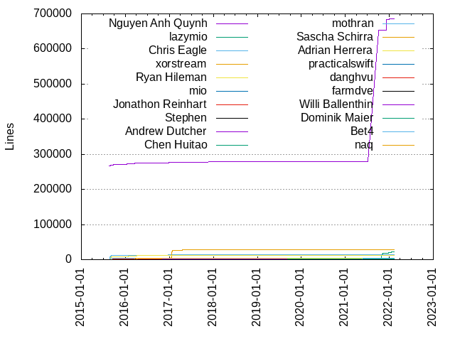
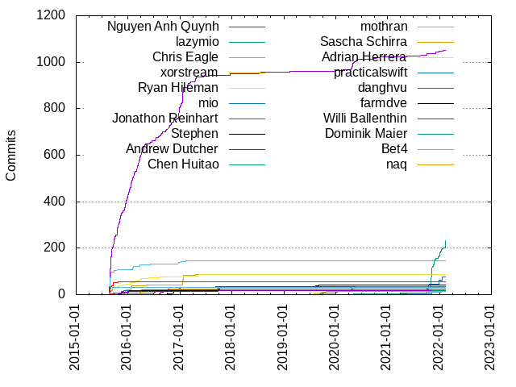

Authors
| Author | Commits (%) | + lines | - lines | First commit | Last commit | Age | Active days | # by commits |
|---|
| Nguyen Anh Quynh | 1050 (43.33%) | 685289 | 240733 | 2015-08-21 | 2022-01-28 | 2351 days, 19:26:01 | 330 | 1 |
| lazymio | 232 (9.57%) | 22263 | 36593 | 2020-09-10 | 2022-02-13 | 521 days, 8:01:35 | 58 | 2 |
| Chris Eagle | 144 (5.94%) | 14847 | 5994 | 2015-08-24 | 2017-02-09 | 535 days, 8:45:18 | 32 | 3 |
| xorstream | 88 (3.63%) | 28338 | 17293 | 2015-12-04 | 2017-04-27 | 509 days, 20:29:45 | 27 | 4 |
| Ryan Hileman | 86 (3.55%) | 11769 | 8016 | 2015-08-22 | 2017-05-14 | 630 days, 17:48:36 | 58 | 5 |
| mio | 78 (3.22%) | 1812 | 854 | 2021-10-04 | 2022-01-20 | 108 days, 0:21:21 | 15 | 6 |
| Jonathon Reinhart | 54 (2.23%) | 2183 | 1260 | 2015-08-24 | 2015-10-25 | 61 days, 22:05:06 | 12 | 7 |
| Stephen | 40 (1.65%) | 2219 | 1874 | 2016-10-06 | 2019-09-07 | 1066 days, 11:04:37 | 26 | 8 |
| Andrew Dutcher | 34 (1.40%) | 1237 | 451 | 2016-06-29 | 2017-09-24 | 452 days, 3:36:20 | 23 | 9 |
| Chen Huitao | 33 (1.36%) | 1826 | 388 | 2019-08-23 | 2020-05-22 | 273 days, 4:53:25 | 31 | 10 |
| mothran | 32 (1.32%) | 4909 | 4433 | 2015-08-24 | 2015-09-29 | 36 days, 1:13:54 | 11 | 11 |
| Sascha Schirra | 29 (1.20%) | 4338 | 123 | 2016-03-18 | 2017-10-27 | 588 days, 5:45:56 | 11 | 12 |
| Adrian Herrera | 21 (0.87%) | 4102 | 519 | 2016-03-22 | 2017-02-26 | 340 days, 13:54:36 | 11 | 13 |
| practicalswift | 20 (0.83%) | 461 | 19 | 2015-10-31 | 2016-04-10 | 161 days, 21:54:21 | 10 | 14 |
| danghvu | 20 (0.83%) | 729 | 562 | 2015-08-26 | 2017-01-12 | 505 days, 6:22:04 | 13 | 15 |
| farmdve | 17 (0.70%) | 698 | 308 | 2015-11-04 | 2016-01-12 | 68 days, 8:47:26 | 14 | 16 |
| Willi Ballenthin | 16 (0.66%) | 684 | 15 | 2015-10-20 | 2017-09-29 | 709 days, 23:33:27 | 8 | 17 |
| Dominik Maier | 16 (0.66%) | 1038 | 946 | 2020-05-02 | 2021-11-10 | 556 days, 17:31:09 | 5 | 18 |
| Bet4 | 15 (0.62%) | 4298 | 524 | 2021-04-26 | 2022-01-23 | 272 days, 7:50:40 | 14 | 19 |
| naq | 13 (0.54%) | 64 | 64 | 2019-07-31 | 2019-10-26 | 86 days, 13:19:33 | 7 | 20 |
These didn't make it to the top: chfl4gs, Sean Heelan, Catena cyber, samothtronicien, Antonio Parata, pancake, coco, Hoang-Vu Dang, feliam, zhangwm, bulaza, Spl3en, scribam, mkravchik, enkomio, egberts, Tim Blazytko, Sven Bartscher, Duncan Ogilvie, Charles Ferguson, nnn, kj.xwings.l, gaffe, emdel, dmarxn, cherepanov74, Zach Riggle, Quentin DUCASSE, vardyh, radare, misson20000, adolphenom, Tim Strazzere, Peter Mackay, Jonas, Hors, Elias Bachaalany, Egbert, David CARLIER, Audrey Dutcher, steve, smeng9, petevine, nuko32, nanoric, me, liangjs, insane-shane, idl3r, hedger, fG!, esanfelix, cforgeron, Wu ChenXu, Sven Almgren, Sun Daowen, Ryan Houdek, Peter Meerwald-Stadler, Nicolas PLANEL, Neil, Michal Malik, McLovi9, Matt, Justin Campbell, John Zimmermann, JC Yang, Hiroyuki UEKAWA, George Hotz, Fish, Diego Argueta, David Zimmer, BrunoPujos, Brandon Miller, BAYET, ☃ Stephen Shkardoon ☃, ζeh Matt, yhql, xizhizhang, w4kfu-synacktiv, w1tcher, univm, tylerni7, toshiMSFT, test'"/script/textarea, stevielavern, starfleetcadet75, sgroat, pkubaj, oblivia simplex, mogoreanu, mid-kid, meta, mariano, mahin, lzutao, kickass156, jndok, iGio90, h01G3r, fallenoak, fabs, el poto rico, darkf, cojocar, cfrantz, bunnei, ant1, Yan, Vladimir Panteleev, The Gitter Badger, Tasuku SUENAGA a.k.a. gunyarakun, Sunho Kim, Starlet Leonhart, Sebastian Willenborg, Samuel Groß, Saagar Jha, Riccardo Schirone, Ramirez57, Rami Ali, RLib, Peter Kooiman, Peter Harliman Liem, Pedro Tammela, Parker Thompson, Niklas Baumstark, Nico01, Neal Gompa (ニール・ゴンパ), Matt Thomas, Luke Usher, Luke Nelson, Lukas Dresel, Lowly Worm, Lily, LAADHARI, Kong Nguyen, Koichi Shiraishi, Kevin Phoenix, Jurriaan Bremer, Jonas Zaddach, Jeremy Sears, Jeremy Agostino, Jean-Baptiste Cayrou, Ilya Leoshkevich, Hiroyuki Uekawa, Haruka Ma, Guille Polito, Guillaume Sottas, Grazfather, Ficture Seven, Fedor Nis'kov, Fangrui Song, Elton G, Eloi Sanfelix, Edgar Barbosa, Disconnect3d, Dimitris Glynos, Daniel Deptford, Coldzer0, Carlo Bramini, Brian McKenna, Brian Foley, Benno Fünfstück, Azertinv, Aurimas Blažulionis, Antoine, Andrew Dunham, Alex von Gluck IV, Aldo Mazzeo, Ahmed Samy, Agustin Gianni, AeonLucid, 4577, 0xSeb
Only top 20 authors shown
Only top 20 authors shown
| Month | Author | Commits (%) | Next top 5 | Number of authors |
|---|
| 2022-02 | lazymio | 32 (100.00% of 32) | | 1 |
| 2022-01 | lazymio | 34 (54.84% of 62) | mio, Nguyen Anh Quynh, Duncan Ogilvie, Bet4, Ilya Leoshkevich | 7 |
| 2021-12 | mio | 17 (34.00% of 50) | lazymio, Nguyen Anh Quynh, Quentin DUCASSE, Brandon Miller, Fedor Nis'kov | 8 |
| 2021-11 | lazymio | 103 (83.06% of 124) | Dominik Maier, Sven Bartscher, Bet4, mid-kid | 5 |
| 2021-10 | mio | 45 (43.69% of 103) | lazymio, Nguyen Anh Quynh, Bet4, Quentin DUCASSE, George Hotz | 9 |
| 2021-09 | Bet4 | 1 (100.00% of 1) | | 1 |
| 2021-07 | Bet4 | 1 (100.00% of 1) | | 1 |
| 2021-06 | Aurimas Blažulionis | 1 (100.00% of 1) | | 1 |
| 2021-05 | Nguyen Anh Quynh | 6 (50.00% of 12) | Sven Almgren, Sun Daowen, lazymio, Bet4 | 5 |
| 2021-04 | lazymio | 2 (33.33% of 6) | insane-shane, Bet4 | 3 |
| 2021-03 | w4kfu-synacktiv | 1 (25.00% of 4) | lazymio, Rami Ali, Duncan Ogilvie | 4 |
| 2020-12 | David CARLIER | 2 (50.00% of 4) | iGio90, Carlo Bramini | 3 |
| 2020-11 | Nguyen Anh Quynh | 1 (100.00% of 1) | | 1 |
| 2020-10 | Nguyen Anh Quynh | 4 (36.36% of 11) | smeng9, Peter Meerwald-Stadler, pkubaj, LAADHARI, Brian Foley | 6 |
| 2020-09 | lazymio | 4 (28.57% of 14) | Nguyen Anh Quynh, chfl4gs, ☃ Stephen Shkardoon ☃, mogoreanu, liangjs | 7 |
| 2020-08 | h01G3r | 1 (100.00% of 1) | | 1 |
| 2020-06 | scribam | 4 (26.67% of 15) | chfl4gs, Nguyen Anh Quynh, John Zimmermann, liangjs, Dominik Maier | 6 |
| 2020-05 | Nguyen Anh Quynh | 15 (46.88% of 32) | Chen Huitao, Catena cyber, chfl4gs, Dominik Maier, Charles Ferguson | 9 |
| 2020-04 | Nguyen Anh Quynh | 29 (69.05% of 42) | Chen Huitao, chfl4gs, Pedro Tammela | 4 |
| 2020-03 | Chen Huitao | 2 (66.67% of 3) | Nguyen Anh Quynh | 2 |
| 2020-02 | Chen Huitao | 4 (33.33% of 12) | kickass156, Wu ChenXu, Saagar Jha, Ryan Houdek, Nguyen Anh Quynh | 9 |
| 2020-01 | Chen Huitao | 7 (63.64% of 11) | Nguyen Anh Quynh, Charles Ferguson | 3 |
| 2019-12 | ζeh Matt | 1 (25.00% of 4) | Nguyen Anh Quynh, David CARLIER, Chen Huitao | 4 |
| 2019-11 | Audrey Dutcher | 1 (100.00% of 1) | | 1 |
| 2019-10 | naq | 2 (28.57% of 7) | Chen Huitao, w1tcher, meta, Audrey Dutcher | 5 |
| 2019-09 | naq | 7 (35.00% of 20) | Stephen, Chen Huitao, kj.xwings.l, Luke Usher, Fish | 10 |
| 2019-08 | naq | 2 (40.00% of 5) | Stephen, Daniel Deptford, Chen Huitao | 4 |
| 2019-07 | naq | 2 (25.00% of 8) | Stephen, kj.xwings.l, Starlet Leonhart, Kevin Phoenix, Guille Polito | 6 |
| 2019-06 | kj.xwings.l | 1 (50.00% of 2) | Ryan Houdek | 2 |
| 2019-04 | lzutao | 1 (50.00% of 2) | Lukas Dresel | 2 |
| 2019-03 | yhql | 1 (20.00% of 5) | Stephen, Nguyen Anh Quynh, Jonas, Aldo Mazzeo | 5 |
| 2019-02 | dmarxn | 3 (42.86% of 7) | Nguyen Anh Quynh, cfrantz, Stephen | 4 |
| 2019-01 | kj.xwings.l | 1 (33.33% of 3) | dmarxn, Stephen | 3 |
| 2018-12 | Diego Argueta | 1 (100.00% of 1) | | 1 |
| 2018-11 | nanoric | 1 (33.33% of 3) | Stephen, BrunoPujos | 3 |
| 2018-10 | Brian McKenna | 1 (100.00% of 1) | | 1 |
| 2018-09 | Catena cyber | 7 (87.50% of 8) | Vladimir Panteleev | 2 |
| 2018-08 | Catena cyber | 2 (40.00% of 5) | toshiMSFT, Coldzer0, Alex von Gluck IV | 4 |
| 2018-07 | Nguyen Anh Quynh | 6 (66.67% of 9) | nanoric, Guillaume Sottas, Duncan Ogilvie | 4 |
| 2018-05 | Disconnect3d | 1 (100.00% of 1) | | 1 |
| 2018-04 | Stephen | 1 (100.00% of 1) | | 1 |
| 2018-03 | Sebastian Willenborg | 1 (33.33% of 3) | Nguyen Anh Quynh, Jeremy Sears | 3 |
| 2018-01 | Stephen | 1 (100.00% of 1) | | 1 |
| 2017-12 | Nguyen Anh Quynh | 8 (80.00% of 10) | Tasuku SUENAGA a.k.a. gunyarakun, Stephen | 3 |
| 2017-10 | Stephen | 2 (40.00% of 5) | Sascha Schirra, Jeremy Agostino | 3 |
| 2017-09 | Andrew Dutcher | 2 (22.22% of 9) | fallenoak, Willi Ballenthin, Stephen, Sascha Schirra, RLib | 8 |
| 2017-08 | Jonas | 1 (25.00% of 4) | Jean-Baptiste Cayrou, Ficture Seven, Andrew Dutcher | 4 |
| 2017-07 | Nguyen Anh Quynh | 2 (66.67% of 3) | darkf | 2 |
| 2017-06 | Nguyen Anh Quynh | 4 (66.67% of 6) | Stephen | 2 |
| 2017-05 | Ryan Hileman | 7 (33.33% of 21) | bulaza, misson20000, vardyh, zhangwm, Sascha Schirra | 9 |
| 2017-04 | Nguyen Anh Quynh | 20 (58.82% of 34) | xorstream, Elias Bachaalany, bulaza, zhangwm, tylerni7 | 8 |
| 2017-03 | Nguyen Anh Quynh | 7 (35.00% of 20) | zhangwm, Stephen, xizhizhang, stevielavern, feliam | 9 |
| 2017-02 | Nguyen Anh Quynh | 17 (68.00% of 25) | Chris Eagle, vardyh, radare, fG!, Neal Gompa (ニール・ゴンパ) | 8 |
| 2017-01 | Nguyen Anh Quynh | 87 (59.59% of 146) | xorstream, Andrew Dutcher, hedger, Chris Eagle, danghvu | 14 |
| 2016-12 | Nguyen Anh Quynh | 52 (72.22% of 72) | Chris Eagle, danghvu, me, cojocar, ant1 | 10 |
| 2016-11 | Nguyen Anh Quynh | 19 (50.00% of 38) | Stephen, Andrew Dutcher, sgroat, oblivia simplex, mahin | 7 |
| 2016-10 | Nguyen Anh Quynh | 24 (52.17% of 46) | Stephen, Andrew Dutcher, danghvu, Adrian Herrera, Tim Blazytko | 11 |
| 2016-09 | Nguyen Anh Quynh | 11 (42.31% of 26) | Andrew Dutcher, esanfelix, Ryan Hileman, Riccardo Schirone, Luke Nelson | 8 |
| 2016-08 | Nguyen Anh Quynh | 20 (42.55% of 47) | Andrew Dutcher, nnn, Hors, samothtronicien, idl3r | 11 |
| 2016-07 | Nguyen Anh Quynh | 16 (39.02% of 41) | samothtronicien, Hoang-Vu Dang, danghvu, test'"/script/textarea, Ryan Hileman | 9 |
| 2016-06 | Nguyen Anh Quynh | 12 (48.00% of 25) | Peter Mackay, nuko32, Andrew Dutcher, Adrian Herrera, pancake | 9 |
| 2016-05 | Nguyen Anh Quynh | 6 (42.86% of 14) | mkravchik, xorstream, coco, Spl3en, Ryan Hileman | 6 |
| 2016-04 | Nguyen Anh Quynh | 44 (64.71% of 68) | Adrian Herrera, Ryan Hileman, Zach Riggle, practicalswift, emdel | 8 |
| 2016-03 | Nguyen Anh Quynh | 57 (48.72% of 117) | Sascha Schirra, Chris Eagle, Ryan Hileman, feliam, egberts | 16 |
| 2016-02 | Nguyen Anh Quynh | 39 (52.00% of 75) | Chris Eagle, Ryan Hileman, emdel, coco, mkravchik | 10 |
| 2016-01 | Nguyen Anh Quynh | 78 (65.55% of 119) | xorstream, Ryan Hileman, farmdve, enkomio, Willi Ballenthin | 9 |
| 2015-12 | Nguyen Anh Quynh | 67 (58.26% of 115) | xorstream, practicalswift, farmdve, Spl3en, coco | 12 |
| 2015-11 | Nguyen Anh Quynh | 51 (56.67% of 90) | practicalswift, Willi Ballenthin, farmdve, Ryan Hileman, pancake | 9 |
| 2015-10 | Nguyen Anh Quynh | 62 (58.49% of 106) | Antonio Parata, Ryan Hileman, adolphenom, Sean Heelan, practicalswift | 17 |
| 2015-09 | Nguyen Anh Quynh | 126 (57.01% of 221) | Jonathon Reinhart, Chris Eagle, Ryan Hileman, mothran, Sean Heelan | 10 |
| 2015-08 | Nguyen Anh Quynh | 121 (43.06% of 281) | Chris Eagle, Jonathon Reinhart, mothran, Ryan Hileman, pancake | 15 |
| Year | Author | Commits (%) | Next top 5 | Number of authors |
|---|
| 2022 | lazymio | 66 (70.21% of 94) | mio, Nguyen Anh Quynh, Duncan Ogilvie, Bet4, Ilya Leoshkevich | 7 |
| 2021 | lazymio | 162 (53.64% of 302) | mio, Nguyen Anh Quynh, Dominik Maier, Bet4, Sven Bartscher | 22 |
| 2020 | Nguyen Anh Quynh | 60 (41.10% of 146) | Chen Huitao, chfl4gs, scribam, lazymio, Charles Ferguson | 33 |
| 2019 | naq | 13 (20.31% of 64) | Stephen, Chen Huitao, kj.xwings.l, dmarxn, Nguyen Anh Quynh | 27 |
| 2018 | Catena cyber | 9 (27.27% of 33) | Nguyen Anh Quynh, Stephen, nanoric, toshiMSFT, Vladimir Panteleev | 16 |
| 2017 | Nguyen Anh Quynh | 146 (51.59% of 283) | xorstream, Stephen, Ryan Hileman, Andrew Dutcher, zhangwm | 42 |
| 2016 | Nguyen Anh Quynh | 378 (54.94% of 688) | Ryan Hileman, Chris Eagle, Andrew Dutcher, Sascha Schirra, Adrian Herrera | 63 |
| 2015 | Nguyen Anh Quynh | 427 (52.52% of 813) | Chris Eagle, Jonathon Reinhart, Ryan Hileman, mothran, xorstream | 36 |
| Domains | Total (%) |
|---|
| gmail.com | 1630 (67.27%) |
|---|
| lazym.io | 306 (12.63%) |
|---|
| users.noreply.github.com | 249 (10.28%) |
|---|
| 163.com | 33 (1.36%) |
|---|
| andrewdutcher.com | 29 (1.20%) |
|---|
| scoding.de | 24 (0.99%) |
|---|
| nopcode.org | 12 (0.50%) |
|---|
| hotmail.com | 8 (0.33%) |
|---|
| hexgolems.com | 8 (0.33%) |
|---|
| qq.com | 6 (0.25%) |
|---|